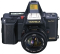

Kyocera是日本第四家推出AF单反机的公司，于1986年推出了Yashica AF 230AF。该照相机出口时仍称“Yashica 230AF”，而在日本国内则称“Kyocera 230AF”。
1986年出售的一款自动对焦的相机。外型设计明显受佳能T70和美能达7000的影响，手柄不理想，大部分的塑料件。重量轻。可使用亚西卡AF系列镜头，通过AF1。6倍转换镜可使用30种以上的康太克斯及亚西卡手动镜头。
程序式，光优。速度优先，手动。程序式暴光可根据镜头焦距自动进行暴光偏移，也可手动偏移，TTL控制闪光。 电子控制快门1/2000秒到16秒及B门。闪光最高为1/90秒。 DX编码自动设定范围由ISO25至5000，手动范围由ISO6至6400。 该机除单次聚焦，连续聚焦外，还有一陷阱聚焦方式。比较好用。
比较费电，过片速度慢。最快每秒仅1。8张。 该机体积大，手柄不易持握。